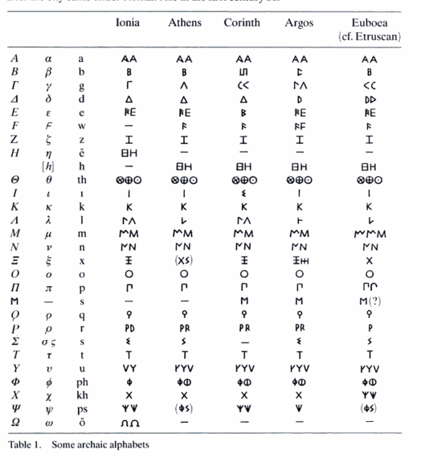

The Ionic alphabet had 24 letters and later became the present-day common Greek alphabet. It was first developed from the Cannanite/Phoenician alphabet. The order and names of letters are derived from Phoenician. Five of the Phoenician consonants began to represent vowel sounds, creating the world's first fully phonemic alphabet of consonant and vowel sounds. In the early 4th century BCE, the Ionic alphabet of Miletus replaced the epichoric alphabets of the various Greek cities. It was adopted for use in Athens in 403 BCE after a proposal by Eucleides.
The new Ionic alphabet included ε and ω to standardise the various sounds that varied from one dialect to another. Some sounds represented by multiple letters in Old Attic were replaced by new single letters, such as how χσ was replaced with ξ and φσ was replaced with ψ. The alphabet lacked a letter h which was not needed in the Ionic dialect, but necessary in the Attic dialect. The capital letters of the Ionic alphabet are almost identical to the modern Greek alphabet. However, unlike modern Greek, the Ionic alphabet included a letter for qoppa (ϙ).
